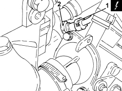
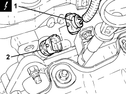

1056F50 COOLANT TEMPERATURE SENSOR - R.R.
- Path
- Procedures > 10 ENGINE > 1056 PETROL INJECTION SYSTEM > 1056F PETROL DIRECT INJECTION SYSTEM > 1056F50 COOLANT TEMPERATURE SENSOR - R.R.
- Kind
- repair procedure (removal / refitting; the operation number is the code)
- Applies to
- engines: 2.2 JTS, 3.2 JTS; all production periods
- Interactive page
- https://sloeber94.github.io/elrnDB-aBrrSpdr/en/#/946001912
Applies to: engines: 2.2 JTS; all production periods
 Removing
Removing
 Refitting
Refitting- Make sure that the ignition key is in the OFF position, then disconnect the battery terminal (-).
1. Disconnect the electrical connection from the engine coolant temperature sensor.
2. Undo the engine coolant temperature sensor and remove it.

Applies to: engines: 2.2 JTS; all production periods
Refitting
Removing- Place the engine coolant temperature sensor in its housing and tighten it to the recommended torque.
Component | Fastening | dia | Value (daNm) | Validity |
|---|---|---|---|---|
Engine coolant temperature sensor | - | M12 | (thermostat unit side) 2.2 | 1.9 JTS 2.2 JTS 3.2 JTS |
- Connect the electrical connection to the engine coolant temperature sensor.
- Connect the negative battery terminal.
Applies to: engines: 3.2 JTS; all production periods
Removing
RefittingOp. 1016A10 SOUND-PROOFING COVER - R.R
1. Disconnect the electrical connection for the engine coolant temperature sensor.
Description | Connector | |
|---|---|---|
1 | Engine coolant temperature sensor/sender unit |
2. Undo the engine coolant temperature sensor from the left cylinder head and remove it.

Applies to: engines: 3.2 JTS; all production periods
Refitting
Removing- Place the engine coolant temperature sensor in its housing on the left cylinder head and tighten it to the recommended torque.
Component | Fastening | dia | Value (daNm) | Validity |
|---|---|---|---|---|
Engine coolant temperature sensor | - | M12 | 2.2 |
- Connect the engine coolant temperature sensor electrical connection.
Topics linked from this page (2)
Topics that link to this page (6)
- K025 ENGINE COOLANT TEMPERATURE GAUGE NOT WORKING
- 1056BC ENGINE COOLANT TEMPERATURE SENSOR OPERATION CHECK
- E5030 PETROL ENGINE ELECTRONIC MANAGEMENT - WIRING DIAGRAM
- E5030 PETROL ENGINE ELECTRONIC MANAGEMENT - COMPONENT LOCATION
- E5030 PETROL ENGINE ELECTRONIC MANAGEMENT - WIRING DIAGRAM
- E5030 PETROL ENGINE ELECTRONIC MANAGEMENT - COMPONENT LOCATION